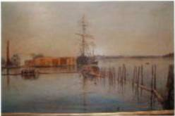

The Family Chronicle
No. 125 December 3, 2006
____________________________________________________________________
Harley Painting

The painting is described as follows:
“I thought you might like to see this photo of an oil painting that I have. It is I believe of Beaubair Island on the Mirimachi River. It is painted by a Burchill. John Harley and George Burchill went into partnership in 1849 and worked together until 1857 when Burchill set up business on his own. I presume the painting was done about this time. It is signed but not dated. My grandmother, John Harley’s granddaughter brought it over from Canada when she got married.
Regards Kelsie”
Kelsie’s Great Great Grandfather, John Harley, was a sister to my Great Grandmother, Margaret (Harley), Glendenning. This makes Kelsie a third cousin once removed. For a while the Harleys and Burchills were partners in the building of wooden ships, I believe on Beaubear’s Island but it may have been on the mainland.
Gazette 1931-32
Selected items from Chatham Gazettes of the era:
ADAMS HOUSE – Chatham’s popular hotel. Good auto accommodations. John C. White, Prop.
River View Hotel, James Hayes, Prop. Water Street, Chatham, Good accommodation for autos and horses in connection
Rooms to let. Regular meals at Park Hotel. Mrs. Catherine Lahay
TOURISTS Comfortable Lodgings and meals await you at The Modern Tea Room, Duke St. – Chatham. Mrs. W J Groat
Touraine Hotel Chatham, NB. Most central location. H B McDonald, Prop. P L McDonald, Mgr.
Rubenstein’s had butter for 22 cents per pound.
Fraser’s Saw Mill would deliver wood to Chatham for $3 per truckload.
Men’s fleece lined shirts and drawers, size 36 to 42, were 69 cents each.
Closet bowl brushes 15 to 20 cents, baby bottle brushes 5-15 cents, stove brushes 25-45 cents, shoe brushes 30-40 cents, milk bottle brushes 25 – 40 cents, radiator brushes 65 cents, floor mops 25 cents
Rooms at the Admiral Beatty Hotel in Saint John for $2.50 a night.
3 tins of tomato soup for 25 cents, Royal York matches 3 (boxes) for 25 cents, a pound of Orange Pekoe ea for 45 cents, Non-Such stove polish 18 cents a bottle,
Boys khaki coveralls, ages 3-8, 75 cents
Bridge was a popular summer past time in Bay du Vin. The paper reports one such game held at Shorecliffe cottage, Bay du Vin Beach, with Mrs. Jack Nicol as hostess. Others present included Mrs. Gibbesron, Mrs. Murdoch, Mrs. Cruikshank and Mrs. J H Ramsay
Window sticks
There were over 120 homes along the Black River in 1939; I estimate that at least 100 of those homes had one or more window sticks made by students at the Miramichi Rural High School. It was an early, if not first, “shop” project made by each Grade Seven boy – and frequently there were several boys in a family.
The usual window stick was 12 or 16 inches long, 3 inches wide and ¾ inch thick. It had four steps and was used to hold up a window. In those days all windows in Black River lifted and none were balanced to stay in an open position without a window stick. (I cannot ever recall seeing an awning or casement window) Window sticks when airing out the house in the spring, but most often, to allow air to circulate through the house on hot days or nights.
Mr. Quayle, the Principal, taught a number of subjects including “shop” but, because he taught other subjects as well, we frequently found ourselves learning alone.
When I made my first window stick, I simply used one made by another student as a pattern. Unfortunately, the other student was not very good at woodworking and the mistakes he made on his were amplified on mine.
Fraser MacKay, two grades ahead of me, took pity on me and, more important, took time to show me how to do a proper layout. It was a lesson I never forgot.
Remember Bluestone?
A friend’s horse that had an injured leg and had developed proud flesh. (Proud flesh is normal flesh that has become overactive and grows too fast. It may also be accompanied by infection.) Antibiotics are used today. As I recall, in earlier days. bluestone was used.
Horses sometimes also had a problem called thrush, in their feet. It was caused by standing too long in a wet stall or one not regularly cleaned. Thrush is actually the decay of the frog and is easily curable. One of the cures was bluestone.
The internet tells me that bluestone is really copper sulphate.
The Family Chronicle (Copyright) is an occasional newsletter published by Don Glendenning and posted on the family website. It is intended to share information about my family, community and the times in which I grew up. While every effort is made to be accurate, errors are likely to occur. Comments, enquiries and information may be sent to 62 Queen Elizabeth Drive, Charlottetown, PEI, C1A 3A9. Tel: 902 892 5859. Email: dglende@auracom.com Web: www.glendenning.net/don